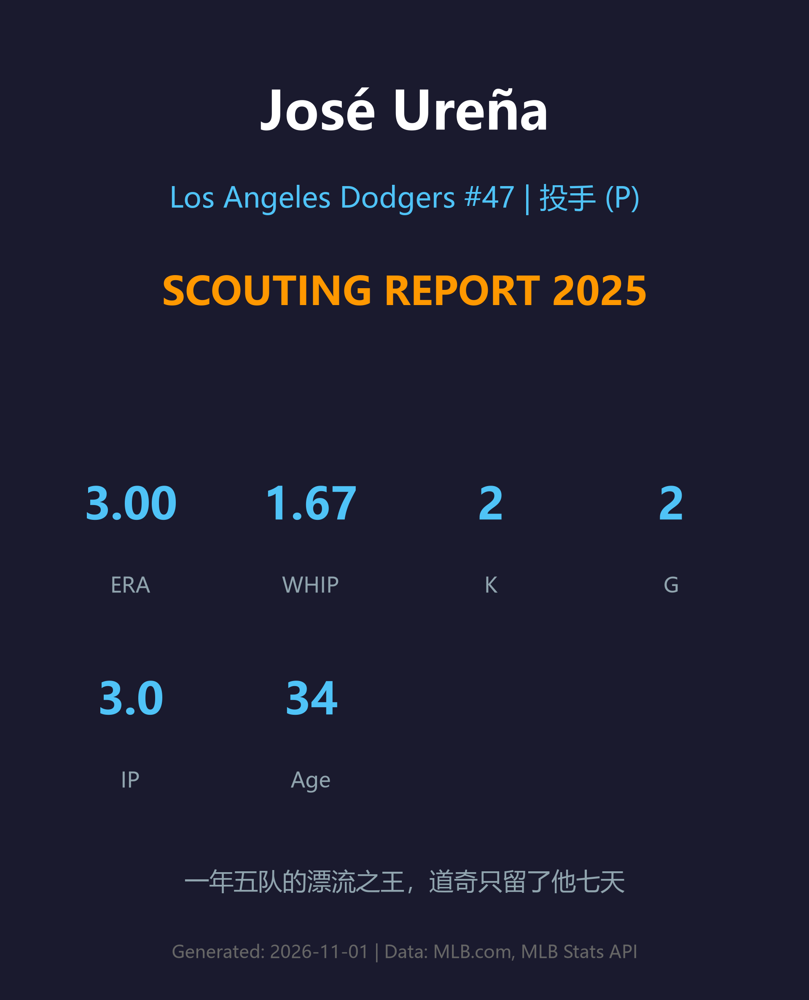
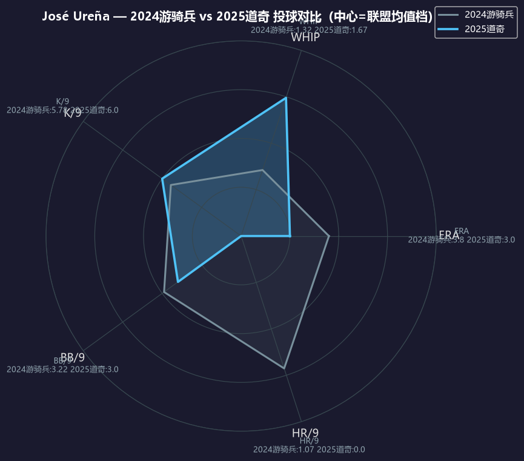
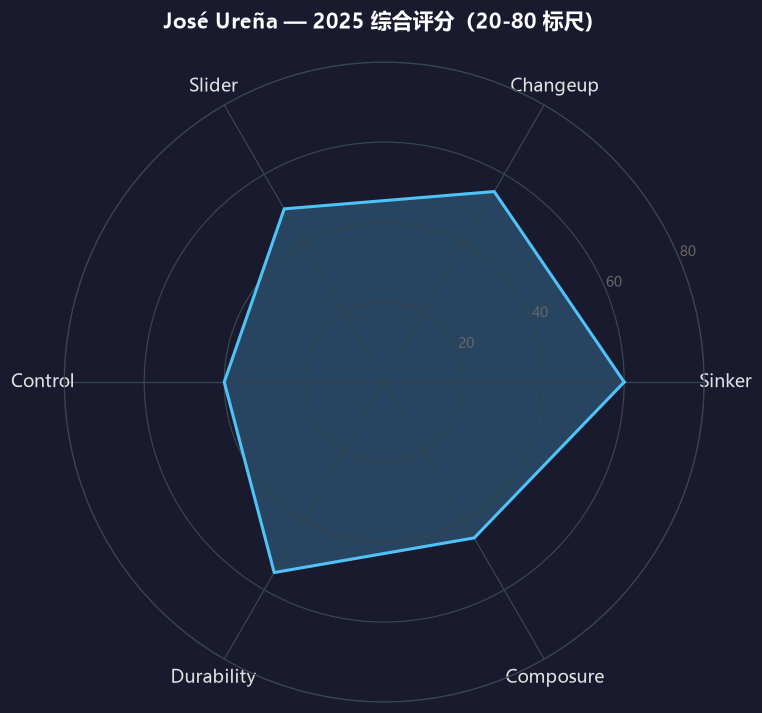

Los Angeles Dodgers #47 | 投手 | 右投 | 一年五队的漂流之王，道奇只留了他七天

José Ureña 的 2025 年是 MLB 流浪投手的吉尼斯纪录级剧本：大都会开季（1 场、15.00、1 救援成功）→ 蓝鸟（6 场）→ 道奇（6 月 3 日签约、6 月 10 日被 DFA、6 月 13 日选择自由球员——整整七天）→ 双城（4 场、3 场先发）→ 天使（6 场）。一年五队，六件球衣。
道奇的七天是五站中最短的一站，却贡献了他全年最干净的数字之一：2 场、3 局、自责分率 3.00、零全垒打。34 岁的他早已不是 2017-18 年那个为马林鱼吃 170 局的年轻主力，但他的「漂流价值」反而在生涯后期达到峰值——96 mph 伸卡依旧沉重，先发/长中继/短局随叫随到，且对任何形式的合约都来者不拒。
从 2025 年 11 月的视角看，Ureña 是自由市场上最便宜的「局数保险」：他全年辗转五队合计 55 局、每支队都从他身上拿到了即战力，没有一支队为他停留超过一个月。这不是悲剧，而是一种奇特的成就——在 modern baseball 的 roster 经济学里，能被五支球队依次信任 34 岁的手臂，本身就是对 durability 的最高褒奖。
迈阿密马林鱼时代的巅峰：2017 年 28 场先发、自责分率 3.82、169.2 局；2018 年更扛下 31 场先发、174 局——那时他是球队轮值里唯一能稳定吃局数的先发。
在德州游骑兵投出 33 场（9 场先发）、109 局、自责分率 3.80——先发与牛棚无缝切换的 swingman 教科书，也是近五年状态最好的一年。
大都会 → 蓝鸟 → 道奇 → 双城 → 天使：单季五支 MLB 球队，史上罕见的 roster 游牧。每站都拿到出赛，每站都留下即战力。
以下为道奇段数据（2025-06-03 自由球员签约、2025-06-10 被指定让渡、6-13 选择自由球员）：

| 赛季 | 球队 | G | GS | ERA | WHIP | IP | SO | BB |
|---|---|---|---|---|---|---|---|---|
| 2024 | TEX | 33 | 9 | 3.80 | 1.32 | 109.0 | 70 | 39 |
| 2025（大都会） | NYM | 1 | 0 | 15.00 | 2.67 | 3.0 | 3 | 1 |
| 2025（蓝鸟） | TOR | 6 | 2 | 3.65 | 1.22 | 12.1 | 5 | 3 |
| 2025（道奇） | LAD | 2 | 0 | 3.00 | 1.67 | 3.0 | 2 | 1 |
| 2025（双城） | MIN | 4 | 3 | 4.58 | 1.42 | 17.2 | 10 | 8 |
| 2025（天使） | LAA | 6 | 1 | 3.79 | 1.42 | 19.0 | 14 | 10 |
把六段放在一起，一幅「可靠即战力」的画像清晰浮现：除大都会的开季爆炸（3 局 15.00）外，其余五段自责分率全部在 3.00-4.60 之间——他的真实水平就是一条稳定在 4 上下的直线，无论穿哪件球衣。对争冠球队来说，这种「即插即用、永不惊喜也永不塌方」的属性，正是 deadline 前最抢手的商品；对他自己来说，34 岁的身体还能在一年内支撑五次搬家，本身就是 durability 的注脚。
2025 赛季真实配球数据（MLB Stats API pitchArsenal，五队汇总）：
使用率第一的招牌重伸卡，34 岁还能均速 96——沉球诱导滚地球，是他吃局数的根基，也是五队轮流认领他的原因。
两好球后的主要三振选项，横移对付右打者稳定有效。
对付左打的主武器，7.3 mph 速差与伸卡形成经典组合。
直上版本偶尔抢好球；整体速球结构在同年龄段属上乘。
Ureña 的道奇七天（签约 → DFA → 选 FA）浓缩了 modern baseball 的 roster 逻辑：道奇 6 月初需要一个能吃长局数的右臂填补伤病潮，他到了、投了 3 局 3.00、完成了任务；十天后缺口关闭，他被 DFA；他选择自由球员身份，因为双城给了他先发出赛的承诺。没有恩怨，没有误判——只有供需。他是这套系统里最清醒的玩家：从不为任何一站停留超过必要时间，也从不拒绝任何一次电话。
2017-18 年的 Ureña 是马林鱼轮值的支柱：连续两年 170+ 局、合计 343.2 局的负累最终留下了账单——2021 年后的他再也回不到先发主力的位置，但转型 swingman 反而延长了他的生涯。2024 年游骑兵的 109 局 3.80 证明转型成功；2025 年的五站漂流证明这种成功可以复制到任何环境。这不是衰退，是进化。
从 11 月的视角看，Ureña 的冬天将由电话定义：某个总经理会在某次伤病潮里拨通他的号码，开出一份 7 天的小联盟合约或一笔现金交易。他不会挑剔，因为他知道——能被五队需要的投手，总会被第六队需要。这是 34 岁漂流者的自信，也是他职业生涯最可靠的资产。

永远有下一站的漂流专家
C+ 级 / swingman 保险丝
道奇 2025 季后赛夺冠之路：外卡 2-0 红人 → NLDS 3-1 费城人 → NLCS 4-0 酿酒人 → 世界大赛 4-3 多伦多蓝鸟。
Ureña 与这条夺冠路无关——他的 2025 年止步于天使队九月的最后一场常规赛。命运开了一个小小的玩笑：道奇世界大赛击败的正是多伦多蓝鸟，而他在四月曾为蓝鸟投过 12.1 局。十月属于别人，而他的战场永远在下一站。
Ureña 的 2026 年从另一份短约开始：可能是小联盟合约、可能是现金交易、可能是又一次 waiver 认领。他的目标从来不是「找到家」，而是「保持能随时出发的状态」——这是一位 34 岁漂流者的职业信条。
理想剧本：某重建球队给他一个固定 swingman 位置，投满一整个赛季
现实基准：继续「哪里需要哪里去」的漂流生涯
上行惊喜：复制 2024 游骑兵年，成为某支季后赛球队的隐形拼图
José Ureña 来自多米尼加首都圣多明各，2015 年 4 月 14 日在迈阿密马林鱼登上大联盟。马林鱼时代的他是球队的支柱投手：2017 年 28 场先发 3.82，2018 年 31 场先发 174 局——在那个球队连年重建的年代，他是轮值里唯一恒定的东西。
2021 年转战底特律后，他的角色开始流动：老虎、酿酒人、洛矶、白袜、游骑兵——每一站都是一份即战力合同。2024 年在游骑兵的 109 局 3.80 是他转型 swingman 后的代表作，也为他赢得了 2025 年五队漂流的机会。
2025 年 11 月的 José Ureña 刚从第五件球衣的更衣室里走出来。十一年 MLB 生涯、十支球队、无数张登机牌——他不是任何一支球队的名人堂，但他是所有球队总经理通讯录里那个永远不会拒接的电话。在职业棒球的丛林里，这本身就是一种不朽。